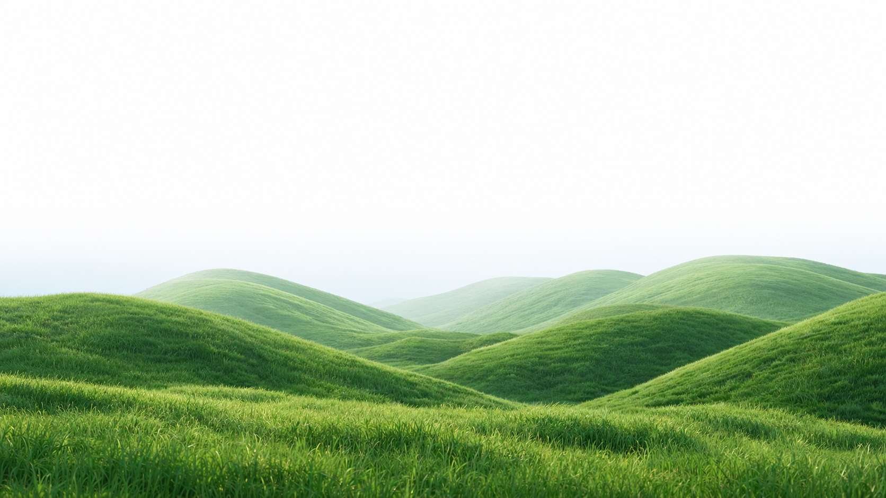

Semua Panduan
📚
Tidak ada panduan ditemukan
Dari dasar hingga hidroponik — semua dibuat ramah pemula dengan bahasa sederhana, visual, dan checklist praktik.
Kurikulum singkat
Urutan belajar yang paling sering berhasil untuk pemula — pahami fondasinya dulu, baru praktik.
Dasar berkebun
Alat, media tanam, dan mindset berkebun — disusun supaya kamu tahu harus mulai dari mana di hari pertama.
Merawat tanaman
Kenali tanda overwater vs underwater dari daun, atur cahaya ideal, dan jaga media tanam tetap sehat.
Plant journey
Setiap panduan terhubung ke Plant Journey — pahami fase Seed sampai Harvest, lalu kerjakan task harian di kebunmu sendiri.

Tidak ada panduan ditemukan
Cek pemahaman
Tap kartu untuk flip — belajar konsep berkebun dengan cara playful.
Penyiraman
Tap untuk lihat tanda overwater
Tanda Overwater:
Daun kuning, akar bau, media becek.
Cahaya
Tap untuk ideal tanaman
Ideal:
Sayur butuh 6 jam Full Sun, hias cukup Bright Indirect.
Pemupukan
Tap untuk dosis aman
Dosis:
Kompos 1 genggam/2 minggu, NPK ikut label.
Beginner roadmap
Plant journey
Belajar → praktik di Kebunku. Setiap guide punya tombol “Mulai di Kebunku”, jadi teori tidak berhenti di layar.
Keranjang
Smart Garden Basket